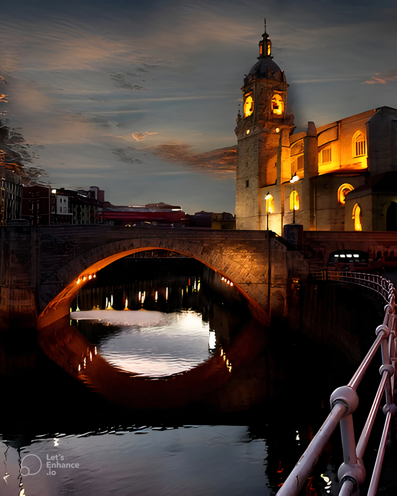
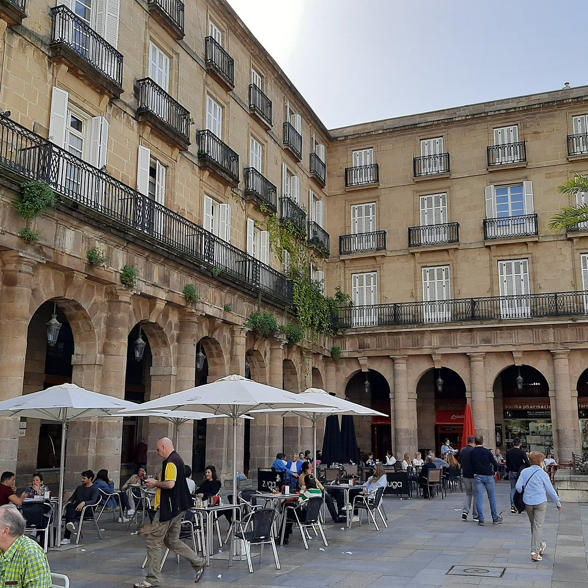
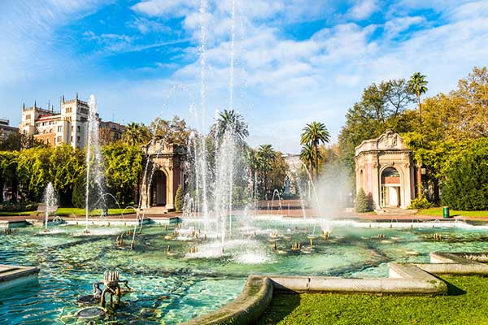
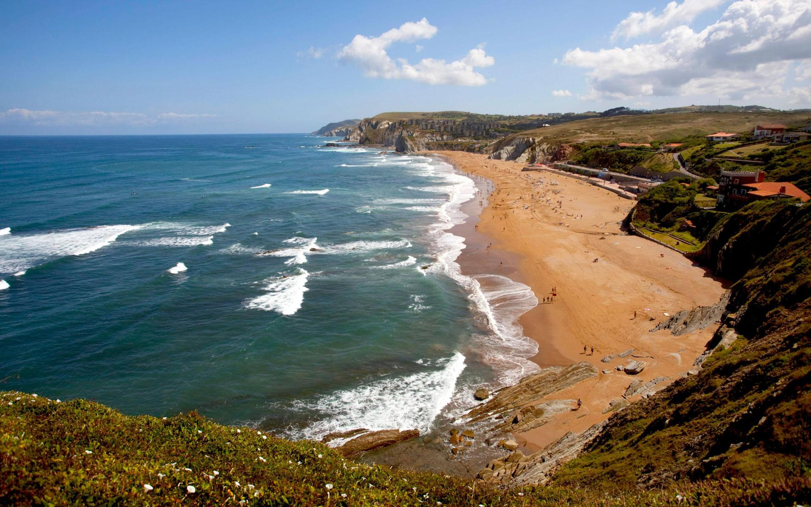
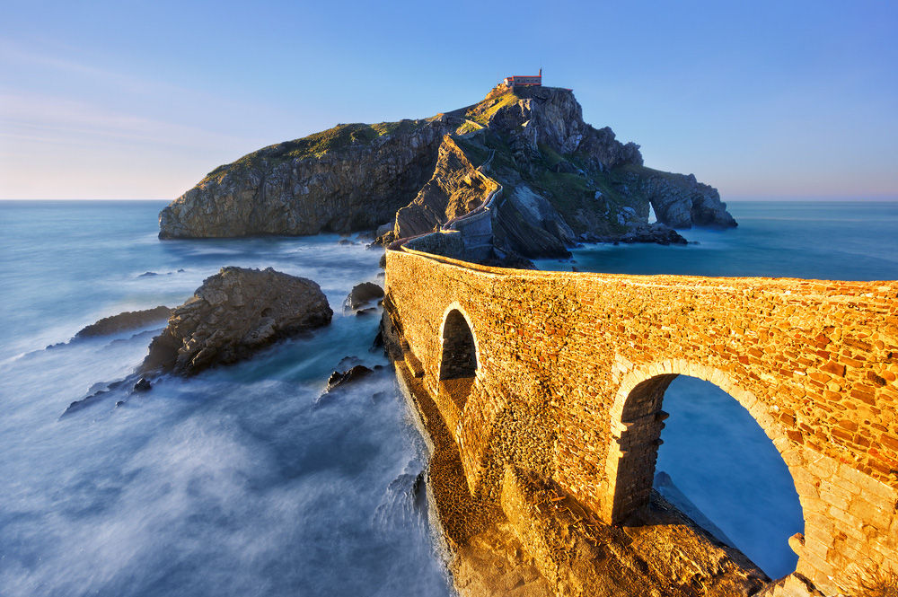

Bilbao
Welcome to Bilbao
Welcome to Bilbao, a vibrant city in northern Spain, where art and culture come alive to create an extraordinary journey. Known as the heart of the Basque Country , Bilbao offers visitors an unforgettable blend of modern architecture, rich traditions, exquisite cuisine, and a lively atmosphere. From the iconic Guggenheim Museum to the charming streets of Casco Viejo, Bilbao is a city waiting to be discovered and enjoyed at every turn.
Whether you're here for a culinary adventure, an inspiring journey through contemporary art, or a relaxing escape into the green hills and river fronts, Bilbao has something for everyone. Get ready to immerse yourself in a city where tradition meets modernity, all set against the stunning backdrop of the Basque landscape.
-

San Anton Bridge San Anton Bridge: An Icon of Bilbao
The San Anton Bridge , gracefully spanning theNervión River , is a symbol of Bilbao's historic and cultural identity. Built in the medieval era, this iconic structure has served as a crucial connection for trade and travel, linking the city's bustling markets and neighborhoods. Its enduring presence is so significant that it is proudly featured on Bilbao's coat of arms, embodying centuries of resilience and community spirit.
Crossing the San Anton Bridge offers breathtaking views of Bilbao's charming Casco Viejo (Old Town), where narrow streets meet vibrant architecture. Whether a history enthusiast or a casual traveler, this bridge invites you to immerse yourself in the rich tapestry of Bilbao's past and present.
-

Begona Basilica Begona Basilica: A Sacred Sanctuary
Perched on a hill that offers a stunning view of Bilbao, the Begona Basilica is a revered pilgrimage site. Dedicated to the Virgin of Begona, the patron saint of Biscay, it holds deep spiritual significance for locals and visitors alike.
The basilica's Gothic-Renaissance architecture is a striking blend of styles, featuring intricate details and soaring arches. Visitors can also enjoy breathtaking panoramic views of Bilbao and its surroundings, making it a perfect spot for both reflection and exploration.
-

Plaza Unamuno Miguel Plaza Unamuno Miguel: A Cultural Hub
The Plaza Unamuno Miguel is a lively and vibrant square located in the heart of Bilbao’s Casco Viejo. It is named after the renowned philosopher Miguel de Unamuno, whose intellectual legacy deeply influenced the city and its people.
Surrounded by charming shops and cozy cafés, the plaza is a central hub of activity, offering a mix of historical and modern influences. As a gateway to Bilbao’s dynamic cultural scene, it is a perfect place to experience the city's energy and heritage, whether you're strolling through or enjoying a local coffee.
-

Plaza Berria Plaza Berria: A Vibrant Gathering Spot
The Plaza Berria is a lively and bustling square located in the heart of Bilbao's Casco Viejo, where both locals and visitors gather to experience the city's rich atmosphere. This charming square is a focal point for those looking to immerse themselves in the lively spirit of the old town.
Surrounded by traditional taverns and pintxo bars, Plaza Berria is an ideal place to relax and savor local delicacies such as bacalao a la vizcaína (cod in Vizcayan sauce), chistorra (a type of sausage), and tortilla de bacalao (salted cod omelette). Whether you're enjoying a drink or sampl
-

Arriaga Theatre Arriaga Theatre: A Cultural Icon
The Arriaga Theatre is an architectural masterpiece in Bilbao, renowned for its stunning neoclassical design. As one of the city’s most important cultural landmarks, it hosts a variety of performances, including opera, theater, and classical music concerts, attracting audiences from around the world.
Named after the Basque composer Juan Crisóstomo Arriaga, often referred to as the "Spanish Mozart," the theatre stands as a tribute to his legacy. It is an essential destination for those passionate about the performing arts and offers a glimpse into the rich cultural heritage of Bilbao.
-

Dona Casilda Park Dona Casilda Park: A Green Oasis
Dona Casilda Iturrizar Park is a peaceful haven in the heart of Bilbao, offering a serene escape from the city's hustle and bustle. The park is known for its lush gardens, a tranquil pond, and elegant fountains that create a calming atmosphere.
A popular spot for both locals and visitors, the park is ideal for a leisurely stroll, a relaxing picnic, or simply enjoying the beauty of nature. Its combination of greenery and peaceful surroundings makes it a perfect place to unwind and appreciate the outdoors in the midst of the city.
-

Bilbao Fine Arts Museum Bilbao Fine Arts Museum: Artistic Treasures
The Bilbao Fine Arts Museum is home to a remarkable collection of Spanish and European art, showcasing masterpieces that span centuries. The museum's extensive galleries feature works from renowned artists, offering a journey through the evolution of art from the Renaissance to contemporary art.
Whether you’re drawn to classical paintings or modern sculptures, the museum provides a comprehensive experience for art lovers. Its impressive exhibits make it a must-visit destination for anyone interested in exploring the rich artistic heritage of Spain and beyond.
-

Playa de Sopelana Playa de Sopelana: A Coastal Paradise
Located just outside Bilbao, the Playa de Sopelana is a breathtaking beach that attracts visitors with its golden sands and scenic views. Known for its excellent surfing conditions, it is a popular spot for both beginners and experienced surfers.
Whether you seek a relaxing day by the water or an adventure on the waves, Playa de Sopelana offers a perfect escape from the bustling city life. The beach’s natural beauty and tranquil atmosphere make it an ideal destination for outdoor enthusiasts and those looking to unwind.
-

San Juan de Gaztelugatxe San Juan de Gaztelugatxe: A Dramatic Island
The San Juan de Gaztelugatxe, famously featured in Game of Thrones and House Of The Dragons, is a dramatic island located off the Biscay coast. A church sits atop the island, perched on rugged cliffs and surrounded by the stunning beauty of the sea.
Accessible by a winding stone staircase, the journey to the church offers breathtaking views of the coastline and a sense of adventure. This iconic site, with its rich history and spectacular surroundings, is a must-visit for those seeking both natural beauty and a touch of drama.
Bilbao City Cheat Card
| Feature | Details |
|---|---|
| Popular Tourist Areas | Casco Viejo, Abandoibarra, Indautxu, Deusto, Getxo |
| Historical Sites | San Anton Bridge, Bilbao Cathedral, Arriaga Theatre, Plaza Nueva, Begona Basilica |
| Museums and Galleries | Guggenheim Museum, Bilbao Fine Arts Museum, Euskal Museoa, La Ría Maritime Museum |
| Natural Attractions | Dona Casilda Iturrizar Park, Mount Artxanda, Sopelana Beach, Urdaibai Biosphere Reserve |
| Beaches | Sopelana Beach, Plentzia Beach, Gorliz Beach, Bakio Beach |
| Festivals and Events | Bilbao BBK Live, Aste Nagusia (Great Week), Basque Pelota Championships, Bilbao Night Marathon |
| Shopping Areas | Mercado de la Ribera, Gran Vía, Casco Viejo Boutiques, Zubiarte Shopping Mall |
| Must-Try Local Foods | Pintxos, Bacalao al Pil-Pil, Marmitako, Txangurro, Idiazabal Cheese |
| Nightlife | Casco Viejo, Abando, Pozas Street, Indautxu Bars and Clubs |
| Scenic Spots | Guggenheim Promenade, Mount Artxanda Viewpoint, San Juan de Gaztelugatxe, Zubizuri Bridge |